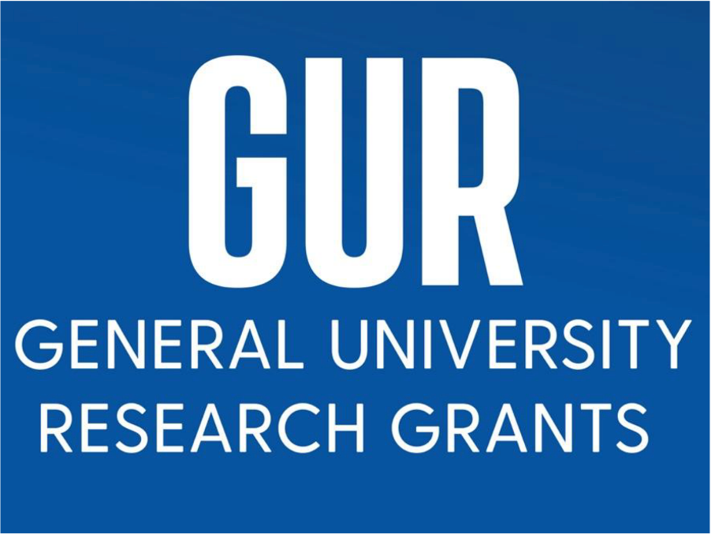
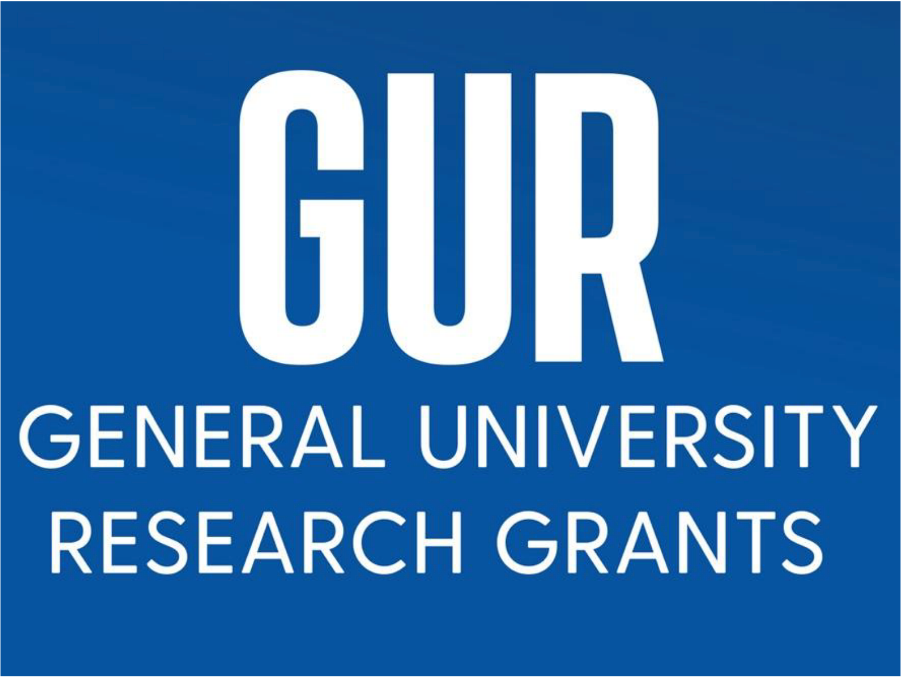
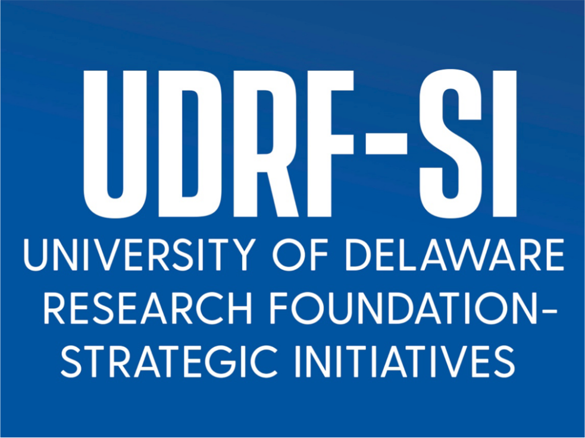
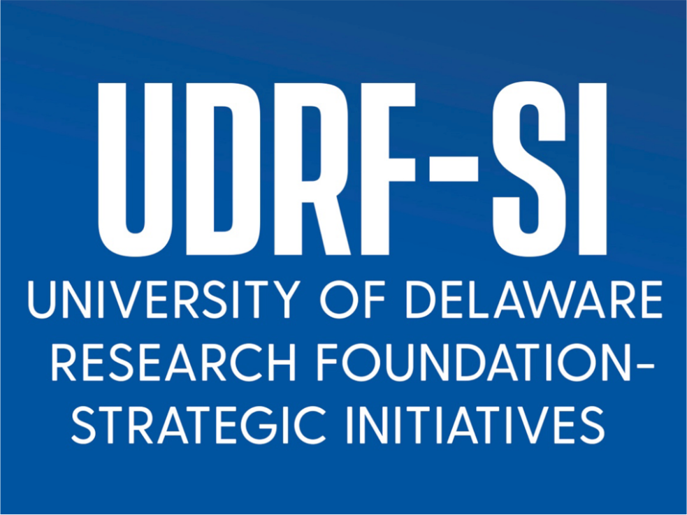

Research Interests
Foundations of Safe Machine Learning (SML) Methodology:
- Robust Optimization: Tackle out-of-distribution challenge with dynamic, long-tail, previously unseen data.
- - ICML'25, NeurIPS'24, ICML'24, CIKM'24, ICLR'23, TMAPI'23, CVPR'22, CVPR'21, CVPR'20, NeurIPS'20, NeurIPS'19, CVPR'19, TPAMI'19
- Rationale Optimization: Safeguard AI predictions with valid rationales for safety and reliability.
- - ICML'25, AAAI'25 Oral, NeurIPS'24, CVPR'23, NeurIPSW'21 Best Paper, ICLR'21 Spotlight, ICCV'19 Oral, NeurIPS'19, KDD'19 Oral
- SML Algorithm and Hardware Co-Design: Optimize for HPC (large) or Edge (small) platforms to manage scaling laws and fault tolerance.
- - AAAI'25, ICML'24, ICCV'23, CVPR'22, AAAI'21, CVPR'22, CVPR'21, CVPR'20, CVPR'19
Use-inspired SML Applications:
- Trustworthy AI for Geoscience: Foundation models for seafloor geological survey; Global illicit mining detection.
- - NSF CAREER (PI), NSF III CORE (PI), DoD DEPSCoR (PI), NSF CMMI (co-PI)
- Safe AI for Health: Large Vision-Language Models (VLM) for MRI interpretation.
- - MSK Cancer Center (PI), CDC Contract (PI)
- Fault-tolerant AI for Autonomous Vehicles: End-to-end safe learning for model, hardware, and system.
- - NSF SLES Medium (PI), NSF III CORE (PI)
Awards
I am honored with prestigious research awards for early-stage investigators:
- NIH R21 Award (2025)
- NSF CAREER Award (2024)
- DOD DEPSCoR Award (2023)
- Google Faculty Research Award (2022)
- General University Research Award (2022)
- Research Foundation Award (2022)
My work won a series of paper awards in top-tier AI/ML conferences:
- Oral Presentation, AAAI 2025, acceptance rate 4.7%
- Strong Double Blind, ECCV 2024, acceptance rate 4.5%
- Best Paper Award, NeurIPSW 2021
- Oral Presentation, CVPR 2021, acceptance rate 4.3%
- Spotlight Presentation, ICLR 2021, acceptance rate 3.8%
- Oral Presentation, ICCV 2019, acceptance rate 4.7%
- Oral Presentation, KDD 2019, acceptance rate 9.2%
- Oral Presentation, BMVC 2018, acceptance rate 4.6%
- Best Student Paper Finalist, ECCV 2016, acceptance rate 0.4%
- Oral Presentation, ICPR 2016, acceptance rate 14.1%
- Oral Presentation Award, ACCV 2010, acceptance rate 3.5%
News and media about my research work:
- Dr. Xi Peng develops AI that thinks and reasons like scientists. [Link]
- Dr. Xi Peng develops trustworthy AI for seafloor data intelligence. [Link]
- DOD announces awards ($600K) under the Defense Established Program to Stimulate Competitive Research. [Link]
- Interdisciplinary UD team received ($1M) NSF grant to map global illicit trade of energy-critical materials. [Link]
- A vision of the fast-growing Data Science Institute at UD. [Link]
Funding
During my tenure track (2019-2025), I have secured 17 research grants totaling over $7M. I am the Sole or Lead PI on 13 of these grants totaling over $4.5M. These grants come from a diverse range of sources including federal agencies, industrial research labs, and UD internal awards.
Federal Grants:
- NIH R21 Award (PI)
- NSF CAREER Award (PI)
- NSF III CORE (PI), with R. Eigenmann (co-PI)
- NSF Safe AI (PI), with W. Shi (co-PI) and C. Yang (co-PI)
- DOD DEPSCoR (PI), with A. Trembanis (co-PI)
- CDC Contract (PI)
- NSF CMMI (Co-PI), with J. Klinger (PI)
- NSF HDR (KP), with F. Bianco (PI)
Industrial Grants:
- MSK Cancer Center (PI)
- Google Research Faculty Award (PI)
- Snap Research Award (PI)
Internal Grants: UDRF (PI); GUR (PI); AICoE Seed (PI); DSI Seed (PI); UDRF-SI (Co-PI)
Teaching
My teaching received an average of 4.35 out of 5 according to UD's internal evaluation and 4.8 out of 5 according to RateMyProfessors.com
Undergraduate-Level: CISC484: Intro to Machine Learning
- 2019 Fall; 2021 Spring; 2021 Fall; 2022 Fall; 2022 Spring
Graduate-Level: CISC684: Intro to Machine Learning
- 2022 Fall; 2023 Fall; 2024 Spring; 2024 Fall
Advanced Graduate-Level: CISC889: Advanced Topics in Machine Learning and Deep Neural Networks
- 2020 Spring; 2020 Fall; 2022 Spring
Service
I serve as the Area Chair, Program Committee, and Reviewers on major AI/ML conferences and journals since 2012:
- Conference Area Chair: CVPR, BMVC, IISE Annual Conf & Expo, ICIG
- Conference Program Committee: NeurIPS, ICML, ICLR, CVPR, ECCV, ICCV, ACL, AAAI, IJCAI
- Journal Guest Editor: Remote Sensing, Neurocomputing, CVIU
- Journal Reviewer: TPAMI, IJCV, TIP, TNNLS, Pattern Recognition
I serve on Proposal and Grant Review Panels since 2020:
- NSF Review Panel: CPS (2025), OAC (2024), III (2024), RI (2023), III (2023), III (2022), CPS (2022), RI (2021), CPS (2020)
- External Proposal Review: Linz Institute of Technology (2024), University of Sydney (2021), University of Central Florida (2020)
- Internal Proposal Review: AICoE (2024), UDRF (2023), GUR (2023)
Publication
I have published over 60 papers in AI/ML and computer vision:
- Over 80% of papers are at top conferences such as NeurIPS, ICML, ICLR, CVPR, ECCV, ICCV, AAAI, IJCAI, and KDD
- Over 80% of papers are first-authored by my PhD students
Selected top-tier AI/ML publication (Click here for a full list)
[ICML'25] Structure-informed Risk Minimization for Robust Ensemble Learning. [PDF]
[ICML'25] "Why Is There a Tumor?": Safeguard Tumor Segmentation and Detection with Trustworthy Rationales [PDF]
[AAAI'25 Oral] Interpretable Failure Detection with Human-Level Concepts. [PDF]
[AAAI'25] Beyond Accuracy: On the Effects of Fine-tuning Towards Vision-Language Model's Prediction Rationality. [PDF]
[NeurIPS'24] Beyond Accuracy: Ensuring Correct Predictions with Correct Rationales. [PDF] [Code]
[NeurIPS'24] SeafloorAI: A Large-scale Vision-Language Dataset for Seafloor Geological Survey. [PDF] [Dataset]
[ICML'24] Ensemble Pruning for Out-of-distribution Generalization. [PDF] [Code]
[ICML'24] Beyond Federation: Topology-aware Federated Learning for Generalization to Unseen Clients. [PDF] [Code]
[ECCV'24 Strong Double Blind] DEAL: Disentangle and Localize Concept-level Explanations for VLM. [PDF] [Code]
[CIKM'24] Adaptive Cascading Network for Continual Test-Time Adaptation. [PDF] [Code]
[ICCV'23] Learning from Semantic Alignment between Unpaired Multiviews for Egocentric Video Recognition. [PDF] [Code]
[CVPR'23] Are Data-driven Explanations Robust against Out-of-Distribution Data?[PDF] [Code]
[ICLR'23] Topology-aware Robust Optimization for Out-of-Distribution Generalization. [PDF] [Code]
[TNNLS'23, IF=14.3] Semi-identical Twins Variational AutoEncoder for Few-Shot Learning. [PDF]
[TPAMI'22, IF=24.3] Out-of-Domain Generalization from a Single Source: An Uncertainty Quantification Approach. [PDF] [Code]
[TMM'22, IF=8.2] Region-aware Arbitrary-shaped Text Detection with Progressive Fusion. [PDF] [Code]
[CVPR'22] Are multimodal transformers robust to missing modality? [PDF] [Code]
[CVPR'22] Symmetry and uncertainty-aware object slam for 6dof object pose estimation. [PDF] [Code]
[NeurIPS'21W Best Paper Award] Deep learning for spatiotemporal modeling of Urbanization. [PDF] [Video-10m]
[ICLR'21 Spotlight] A good image generator is what you need for high-resolution video synthesis. [PDF] [Video-10m] [Code]
[CVPR'21] Uncertainty-guided Model Generalization to Unseen Domains. [PDF] [Video-5m] [Code]
[CVPR'21 Oral] Learning View-Disentangled Human Pose Representation by Contrastive Cross-View Mutual Information Maximization. [PDF] [Video-5m] [Code]
[AAAI'21] Multimodal learning with severely missing modality. [PDF] [Video-60s] [Video-15m] [Code]
[NSDI'21] Adapting Wireless Mesh Network Configuration from Simulation to Reality via Deep Learning-based Domain Adaptation. [PDF]
[IJCV'20, IF=11.5] Towards image-to-video translation: A structure-aware approach via multi-stage generative adversarial networks. [PDF]
[NeurIPS'20] Maximum-entropy adversarial data augmentation for improved generalization and robustness. [PDF] [Code]
[CVPR'20] Learning to learn single domain generalization. [PDF] [Video-60s] [Code]
[CVPR'20] Knowledge as priors: Cross-modal knowledge generalization for datasets without superior knowledge. [PDF] [Video-60s]
[TPAMI'19, IF=24.3] Towards Efficient U-Nets: A Coupled and Quantized Approach. [PDF]
[NeurIPS'19] Semantic-guided multi-attention localization for zero-shot learning. [PDF]
[NeurIPS'19] Rethinking kernel methods for node representation learning on graphs. [PDF] [Code]
[ICCV'19 Oral] AdaTransform: Adaptive Data Transformation. [PDF]
[CVPR'19] Semantic graph convolutional networks for 3d human pose regression. [PDF]
[KDD'19 Oral] Scalable Global Alignment Graph Kernel Using Random Features: From Node Embedding to Graph Embedding. [PDF]
[CVPR'18] Jointly optimize data and network training: Adversarial data augmentation in human pose estimation. [PDF]
[CVPR'18] A generative adversarial approach for zero-shot learning from noisy texts. [PDF]
[ECCV'18] Quantized densely connected u-nets for efficient landmark localization. [PDF]
[ECCV'18] Learning to forecast and refine residual motion for image-to-video generation. [PDF]
[IJCAI'18] Cr-gan: Learning complete representations for multi-view generation. [PDF]
[IJCV'18, IF=11.5] Red-net: A recurrent encoder-decoder network for video-based face alignment. [PDF]
[IJCV'18, IF=11.5] Toward personalized modeling: Incremental and ensemble alignment for sequential faces in the wild. [PDF]
[ICCV'17] Reconstruction-based disentanglement for pose-invariant face recognition. [PDF]
[ECCV'16 Best Student Paper Finalist] A recurrent encoder-decoder network for sequential face alignment. [PDF]
[ICCV'15] PIEFA: Personalized incremental and ensemble face alignment. [PDF]


 
 
